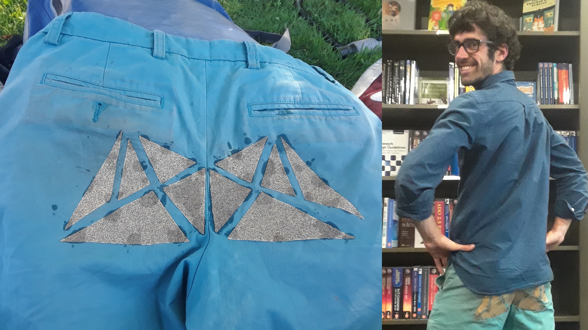
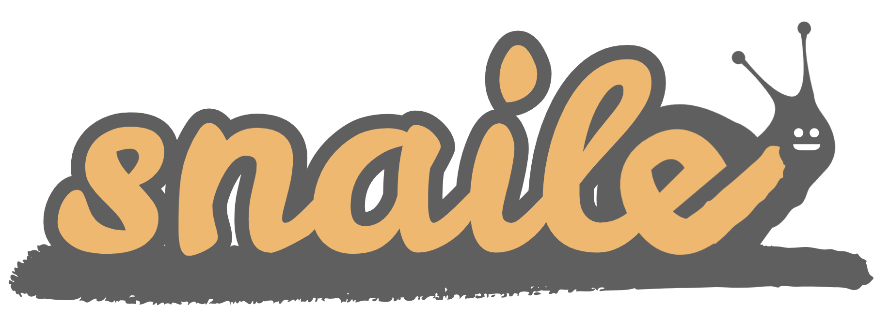
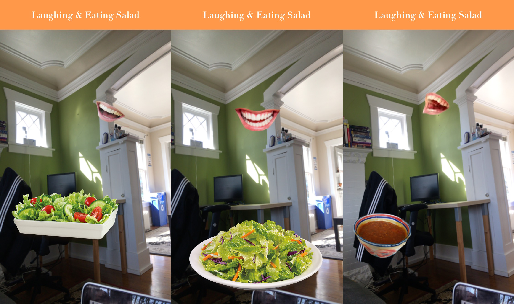
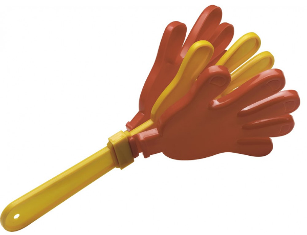

Seattle's Stupid Shit No One Needs & Terrible Ideas Hackathon
An ongoing meetup aimed at filling Seattle with useless shit. Join us at our next meeting, , on at at .
Organized by and based on the original event created by Sam Lavigne & Amelia Winger-Bearskin. The Seattle Stupid Hackathon group/monthly meetup (and this cloned website) was originally created/organized by Ryan Pasecky, who also made the poster to the left. Thanks!
Read our code of conduct.
Categories
Monetizing the glass ceiling Monetizing voter registration Privatizing eyebrows Privatizing criminal justice more Privatizing longing gazes Monetizing natural landscapes Monetizing fear and dread Privatizing reading a book before you go to bed Monetizing the human metabolic process Extracting value from dead bodies Extracting value from barely audible sighs at a dinner party Monetizing Bernie would have won Monetizing teen pregnancy Commodities to End Climate Change
Projects
Guided Stress Meditations
To help you reflect on how mediocre and unexceptional you are. Listen here.
By Sarah S and Chris Z.
Girl Pockets for Men
A simple tool to help you convert your large man pockets into small girl pockets. Available in "Drinking my Enemy's Blood RED" and "Chopping Down a Forest GREEN."
By Michelle.

Sandpaper Pants + Wood Chair
Effortlessly shape any unpainted or unvarnished wood chair to perfectly fit you.
By Dan and H.M.


Mansplaining Twitterbot *on rails*
Replies to tweets with the same exact tweet but prepends what that person just said with a mansplain-y phrase like "Well, actually...". Currently banned from Tweeting :(. Follow it here!
By Shubha and Harry.
Kit10
Cat Emulator - Petting a real cat releases endorphins; petting your screen... probably doesn't. But at least Kit10.pet will make your screen purr (if you're on an Android device and pet it in the right direction!). Pet your screen today: http://kit10.pet.
By S.P.B.
Xx eDgy tExT TrANslATOr xX
Enter some text and we'll turn it into something an EdgY TEeN might write. "xXXBeCausE U ReelLy MiSseD ThiS pHaSe oF UR lYfEXXXx" - MCR, probably. Try it here!
By Shubha Rajan.
What3Birds
Just tell your friends an easy to remember combination of 3 birds that they can later look up to get within 2-3 blocks of you. Then you can start cawing to find each other. Inspired by what3words. Try it here!
By Anonymous.
snaile-mail
You may have to buy a stamp, and it might take a few days for your letters to arrive, and sometimes you may get your neighbor's mail, but there's nothing in the world that can quite emulate getting a snaile-mailed letter.
By The snaile-mail team.

Kondofy It!
Bring the KonMari method to your browser and get rid of stuff that doesn't spark joy using Kondofy It!
By Harry.
Laughing and Eating Salad
Laughing and Eating Slaad is a filterset that helps you present a healthier and happier image.
By Ryan Pasecky.

Sausage Snek
Much like real life everything in Sausage Snek is squishy and pointless.
By Anthony. Play here
Robot Nickelback
Robot Nickelback is the next best thing to having Nickleback in your pocket. Use this revolutionary algorithim to make computers write Nickelback songs for you.
By Jason.

Jenga, as a Unit Definition
Tiring of the constant battles between Imperial and Metric, we took matters into our own hands to create a universal system of measurement to unite the world.
By Kadri.
Slow Fourier Transforms
FFTs have made this generation weak, SFTs are here to solve this. Built in MATLAB, the SFT algorithms with a particular emphasis on inefficiency. Beef up your audio apps, USE SFTs!
By Monty.
Text-to-MIDI
Here we present a childlike audio interpretation of your LINE conversations as part of the ongoing series "LINE as art"
By Titipat.
Clap-clap
This app is the result of trying to answer the oft-pondered question, "What is the sound of one hand clapping?". Whip it out any time you kinda want to applaud, yet don't want to fully commit both of your hands.
By Chad
